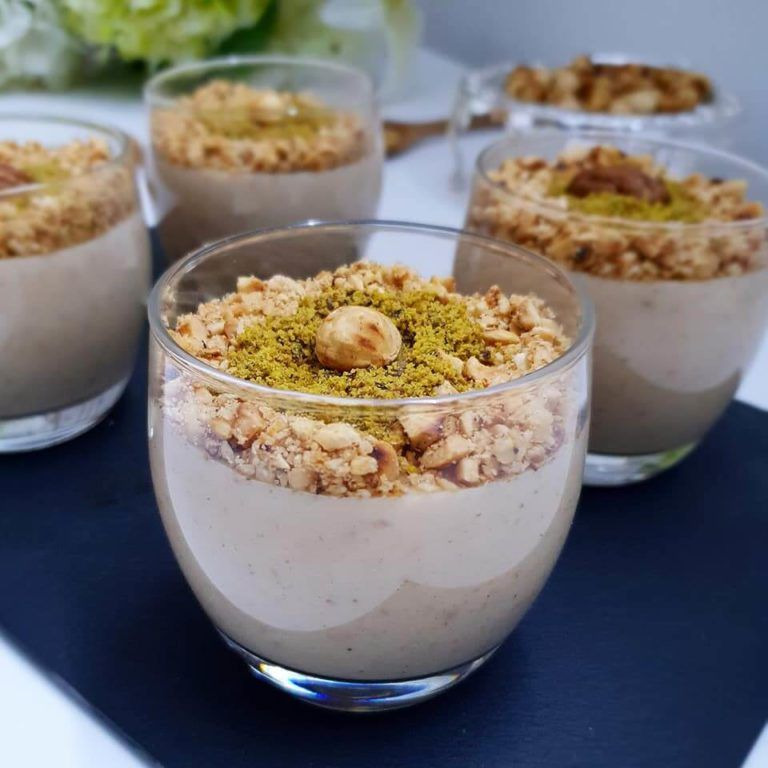

A staple of North African and Tunisian cuisine, you simply can’t claim to be familiar with
Tunisian food if you haven’t had one (or twenty) tagines filled to the brim with couscous! It is
the country’s national dish after all.
A dish originated by the Berbers who still inhabit southern Tunisia, but you can easily find
this popular dish available around the world now.
Couscous is made from semolina wheat that is rolled into the extremely tiny pieces.
Traditional Tunisian couscous is typically served with chicken, fish, beef, or lamb, plus there
are usually vegetables and peppers mixed in.
This Tunisian chickpea soup is flavored with garlic and cumin and served with perfectly stale
bread to make this dish both scrumptious and filling.
You’ll find it garnished with eggs, parsley, and even scallions.
This is a great dish for enjoying the Tunisian winters, which, while still warm compared to much
of the northern hemisphere, can get chilly (especially out in the desert).

This delicious tomato and egg dish is a popular Tunisian breakfast. While it’s eaten across
North Africa, it’s believed to have been created in either Tunisia or Yemen. The name comes from
the Tunisian Arabic slang for “mixture.”
The tomato sauce is flavored with garlic, chili peppers, and spices, and the eggs are poached.
You will typically find it served in either a skillet or in a tagine.

L’origine de la « Bouza » remonte au règne de la dynastie husseinite: cette crème dessert à base
de noisettes était très appréciée par les Beys de Tunis.
It’s impossible to be a guest in Tunisia without being offered something to drink. That drink is
typically tea. There are several stories about the origins of tea in North Africa, and most of
them conclude that the beverage was first brought to Morocco.

this drink, typical of Saharan oases, is primarily consumed from March to October. Another
customer, Haithem, 30, described the drink as "part of our identity".